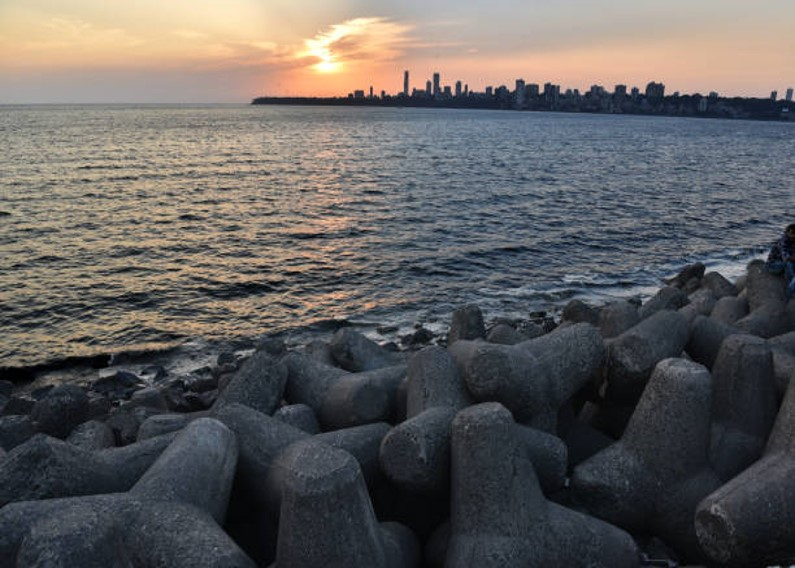
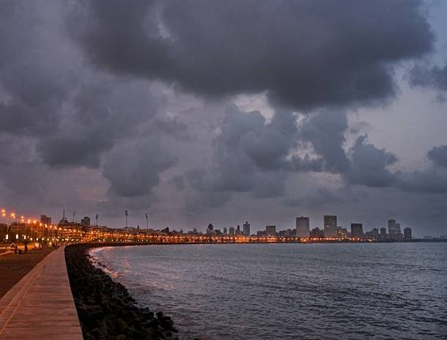

Marine Drive is a 3 kilometre-long Promenade along the Netaji Subhash Chandra Bose Road in Mumbai, India. The road and promenade were constructed by Pallonji Mistry. It is a 'C'-shaped six-lane concrete road along the coast of a natural bay. At the northern end of Marine Drive is Girgaon Chowpatty and the adjacent road along links Nariman Point at southern tip to Babulnath and Malabar Hill at northern tip. Marine Drive is situated on reclaimed land facing west-south-west. Marine Drive is also known as the Queen's Necklace because, when viewed at night from an elevated point anywhere along the drive, the street lights resemble a string of pearls in a necklace. The official name for this road, though rarely used, is Netaji Subhash Chandra Bose Road. The promenade is lined with palm trees. At the northern end of Marine Drive is Chowpatty Beach. This is a popular beach famed for its Bhel Puri (local fast food). Many restaurants also line this stretch of the road. Further down this road lies Walkeshwar, a wealthy neighborhood of the city, also home to the Governor of Maharashtra.

